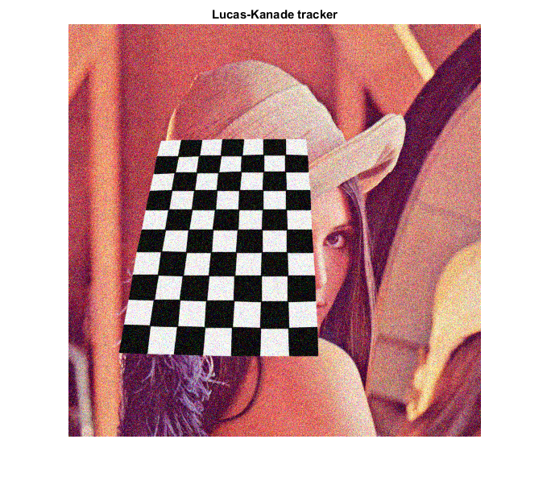
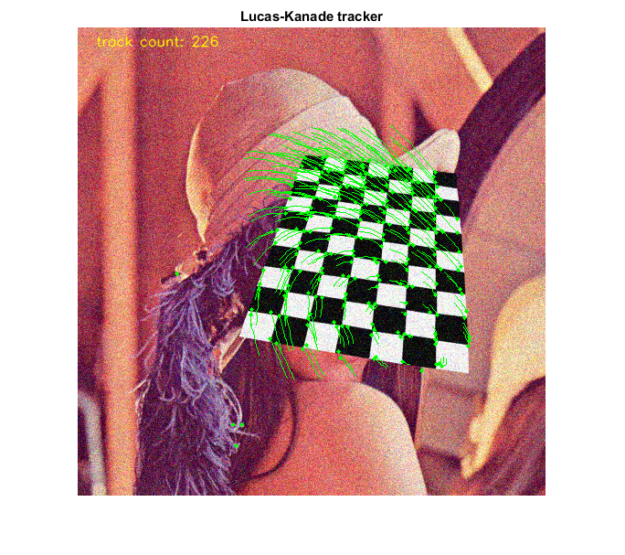

Lucas-Kanade Tracker
Lucas-Kanade sparse optical flow demo. Uses cv.goodFeaturesToTrack for track initialization and back-tracking for match verification between frames.
Sources:
Contents
Options
track_len = 10; % max number of locations of point to remember detect_interval = 5; % detect new corners every X iterations % params for corner detection and flow computation shi_params = {'MaxCorners',500, 'QualityLevel',0.3, 'MinDistance',7, ... 'BlockSize',7}; lk_params = {'WinSize',[15 15], 'MaxLevel',2, ... 'Criteria',struct('type','Count+EPS', 'maxCount',10, 'epsilon',0.03)};
Video
Prepare video source
if true vid = 0; elseif true vid = fullfile(mexopencv.root(), 'test', '768x576.avi'); elseif mexopencv.require('vision') vid = fullfile(toolboxdir('vision'), 'visiondata', 'visiontraffic.avi'); end cap = createVideoCapture([], 'chess'); assert(cap.isOpened(), 'Failed to initialize capturing');
First frame
Grab first frame
frame = cap.read(); assert(~isempty(frame), 'Failed to read frame'); gray0 = cv.cvtColor(frame, 'RGB2GRAY');
Initialize
stores history of locations for a set of points (cell array of Nx2 matrices)
tracks = {};
clr = [0 255 0];Plot
hImg = imshow(frame);
title('Lucas-Kanade tracker')Main loop
counter = 0; % iterations counter while ishghandle(hImg) % Grab next frame frame = cap.read(); if isempty(frame), break; end gray1 = cv.cvtColor(frame, 'RGB2GRAY'); if ~isempty(tracks) % track last position of points, in forward and backward direction p0 = cellfun(@(tr) tr(end,:), tracks, 'UniformOutput',false); p1 = cv.calcOpticalFlowPyrLK(gray0, gray1, p0, lk_params{:}); p0r = cv.calcOpticalFlowPyrLK(gray1, gray0, p1, lk_params{:}); % keep only good matches good = cellfun(@(a,b) max(abs(a - b)), p0, p0r) < 1; tracks = tracks(good); p1 = p1(good); if any(good) % append new locations to existing tracked points tracks = cellfun(@(tr,p) [tr; p], tracks, p1, 'UniformOutput',false); % keep only the last 10 locations in each track (fixed size queue) idx = cellfun(@(tr) size(tr,1), tracks) > track_len; tracks(idx) = cellfun(@(tr) tr(2:end,:), tracks(idx), 'UniformOutput',false); % draw latest points and their tracks (comet-like plot) frame = cv.circle(frame, p1, 2, 'Thickness','Filled', 'Color',clr); frame = cv.polylines(frame, tracks, 'Closed',false, 'Color',clr); end end % display number of tracked points frame = cv.putText(frame, ... sprintf('track count: %d', numel(tracks)), [20 20], ... 'FontScale',0.5, 'Color',[255 255 0], 'LineType','AA'); if rem(counter, detect_interval) == 0 || isempty(tracks) % region of interest mask if ~isempty(tracks) % try to find new points by masking-out last track positions mask = 255 * ones(size(gray1), 'uint8'); p = cellfun(@(tr) tr(end,:), tracks, 'UniformOutput',false); mask = cv.circle(mask, p, 5, 'Thickness','Filled', 'Color',0); roi_params = {'Mask',mask}; else roi_params = {}; end % detect corners p = cv.goodFeaturesToTrack(gray1, roi_params{:}, shi_params{:}); if ~isempty(p) % append new set of points (p is a cell array of 1x2 vectors) tracks = [tracks, p]; end end % Display result set(hImg, 'CData',frame); drawnow; % Next iteration counter = counter + 1; gray0 = gray1; end cap.release();